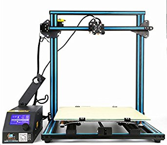

About
Based on the CR-10 comes the CR-10S! This durable printer comes with Dual lead screws and a filament detector to maximize print quality.
Specifications
| Specifications | CR10S |
|---|---|
| Printing Technology | – FDM |
| Build Volume | – 300 x 300 x 300mm |
| Chassis Size (Desk Space Required) | – 623 x 660 x 610mm |
| Filament Diameter Compatibility | – 1.75mm |
| Extruder Style | – Bowden-Style |
| Stock Nozzle | – 0.4mm Creality MK8 Nozzle |
| Stock Hotend Assembly | – Creality MK8 Hotend Assembly |
| Maximum Hotend Temperature | – 260°C |
| Print Platform Style | – Heated Aluminium Bed with Glass Pane |
| Print Platform Max Temperature | – 90°C |
| Printing Speed (Stable) | – 80mm/s |
| Printing Speed (Max) | – 200mm/s |
| Layer Height (Resolution) | – 100 to 300 microns |
| Motherboard / Primary Controller | – Creality3D V2.1 Motherboard |
| User Interface | – LCD Screen with Rotary Encoder (Built-In) |
| Slicing Software Compatibility | – Cura / Simplify3D / Slic3r / Repetier Host |
| File Format Compatibility | – STL / OBJ / DAE / AMF |
| File Transfer Method | – SD Card / USB |
| Bed Levelling System | – Manual with Optional Upgrade |
| Print Resume Functionality | – Included |
| Filament Runout Sensor | – Included |
| Chassis Materials | – Black Anodised Aluminium |
| Included Slicing Software | – Cura |
| Included 3D Printing Filament | – ±200g of PLA Filament |
| Distinct Features | – Upgraded CR-10 with New Features |
| Weight (Printer) | – 13.4kg |
| Weight (Package) | – 15.5kg |
| Operating Voltage | – 12V DC |
| Power Supply Input | – 110V/220V AC, 50/60Hz |
| Power Supply Output | – 12V, 30A, 360W |
User Guide
The video below gives a quick tutorial on how to assemble your CR10 from Creality